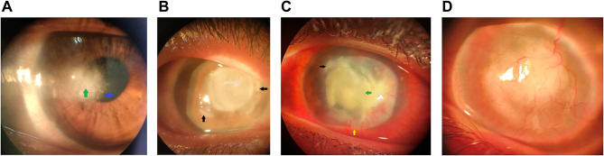
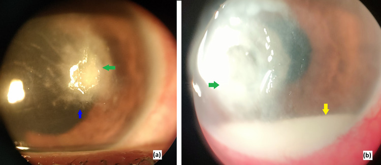
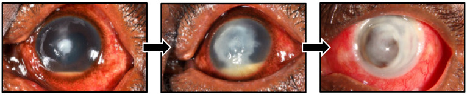
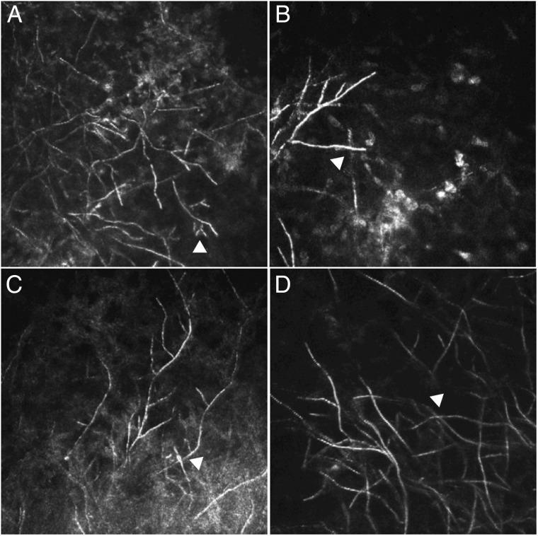

3216 — Viêm giác mạc do nấm sợi (Fusarium/Aspergillus) sau chấn thương thực vật / Filamentous fungal keratitis
Tags: pattern:tham-nhien-giac-mac pattern:o-loet-giac-mac pattern:bo-long-vu pattern:ton-thuong-ve-tinh pattern:mang-noi-mo pattern:mu-tien-phong pattern:sau-chan-thuong-thuc-vat pattern:kinh-tiep-xuc vung:mat vung:giac-mac vung:tien-phong protocol:den-khe protocol:cam-mau-cay protocol:KOH protocol:IVCM protocol:AS-OCT protocol:PCR-nam incidentaloma:khong
Mức chắc chắn (certainty): tổng hợp y văn (literature synthesis) — dựng từ 642 bệnh nhân viêm giác mạc nhiễm ở Nepal (J Fungi 2022, PMC9502267, CC BY 4.0), tổng quan quản lý nấm sợi (J Fungi 2022, PMC9605596, CC BY 4.0), tổng quan chẩn đoán–điều trị 2024 (Clin Ophthalmol 2024, PMC10788054, CC BY-NC 3.0), 52 mắt mảng nội mô trên AS-OCT/IVCM (Cornea 2022, PMC9555760, CC BY-NC-ND 4.0), 198 mắt ghép điều trị (Indian J Ophthalmol 2019, PMC6786177, CC BY-NC-SA 4.0), 40 mắt IVCM + ghép sớm (Clin Ophthalmol 2022, PMC9288216, CC BY-NC 3.0), meta-phân tích 169 nghiên cứu dịch tễ (Front Cell Infect Microbiol 2021, PMC8428535, CC BY 4.0), tổng quan + 3 ca corticoid (J Clin Med 2021, PMC8001350, CC BY 4.0) và IVCM Fusarium vs Aspergillus (Br J Ophthalmol 2017, PMC5537506, CC BY 4.0, DOI 10.1136/bjophthalmol-2016-309656). Nhóm không có bệnh nhân của mình; chỗ chưa đủ chắc ghi "chưa rõ". Không ghi tên tác giả — attribution dùng tạp chí + năm + PMCID.
Câu chốt: Viêm giác mạc do nấm sợi (filamentous fungal keratitis) là bệnh "ổ loét nhỏ hơn thâm nhiễm" — sợi nấm chạy giữa các lá nhu mô nên vùng đục lan xa hơn chỗ biểu mô mất, và không có mạch máu để đưa thuốc tới. Bốn con số phải thuộc: (1) cạo giác mạc nhuộm KOH có độ nhạy 85,3%, IVCM 89,8%, còn cấy chỉ 75,7% — cấy âm không loại trừ (642 bệnh nhân, PMC9502267); (2) natamycin 5% hơn voriconazole 1%: thủng 34 vs 18 (p = 0,02, n = 323) và thị lực tốt hơn 0,18 logMAR ở 3 tháng (p = 0,006) — MUTT1 (PMC9605596); (3) ghép điều trị (TPK) diệt được nhiễm ở 89,9% nhưng tái phát 10,1%, sống ghép trung vị 5,9 tháng, và thâm nhiễm càng lớn càng dễ tái phát (198 mắt, PMC6786177); (4) mảng nội mô trên AS-OCT: bờ mờ/lượn sóng 25/28 ca nấm so với rõ 23/24 ca vi khuẩn (PMC9555760). Bẫy chết người: corticoid làm nặng và có thể gây thủng, còn ngừng corticoid đột ngột cũng làm bùng phát (PMC8001350).
1. Tổng quan bệnh học – cơ chế hình ảnh (TẠI SAO)
1.1 Vì sao nấm "ăn" giác mạc theo lớp — và vì sao ổ loét nhỏ hơn thâm nhiễm
- Giác mạc vô mạch. Nhu mô giác mạc không có mạch máu; nuôi dưỡng bằng khuếch tán từ phim nước mắt, màng củng mạc–kết mạc và thủy dịch. Hệ quả: kháng nấm thấm rất kém, và mọi ổ nhiễm sâu đều chậm lành so với viêm giác mạc vi khuẩn.
- Sợi nấm (hyphae) chạy dọc lá collagen. Sợi nấm xâm nhập qua chỗ biểu mô mất rồi lan theo mặt phẳng các lá nhu mô, có thể vượt xa bờ ổ loét — đó là lý do trên đèn khe thấy bờ "lông vũ" (feathery) và vùng thâm nhiễm rộng hơn khuyết biểu mô. Đây là dấu có giá trị phân biệt với vi khuẩn, nhưng không đặc hiệu tuyệt đối (PMC10788054).
- Vách nấm có ergosterol. Polyene (natamycin, amphotericin B) gắn ergosterol; azole (voriconazole…) ức chế tổng hợp ergosterol. Vì đích là màng tế bào chứ không phải thành, các thuốc này chủ yếu kìm nấm (fungistatic) — cần nhiều tuần, và Fusarium có thể vẫn tiến triển dù điều trị đúng (Hình 3, PMC9605596).
- Men tiêu hủy + phản ứng viêm gây tan chảy (melting) và thủng giác mạc ~10%; hơn một nửa bệnh nhân mất thị lực một mắt (PMC10788054). Toàn cầu ≥ 1 triệu ca/năm, ~100.000 mắt bị bỏ vì chẩn đoán muộn (PMC9288216).
- Vệ tinh (satellite lesions) là vi áp-xe phía trước ổ chính, nơi sợi nấm và bạch cầu tụ lại; gặp ở > 10% ca (PMC10788054). Mủ tiền phòng (hypopyon) gặp ở hơn một nửa ca, phản ánh phản ứng tiền phòng chứ không phải nhiễm đã vào nội nhãn.
1.2 Vì sao hình ảnh trông như vậy (đèn khe – AS-OCT – IVCM – cấy)
- Đèn khe (slit lamp) — ánh sáng tán xạ trên sợi nấm + tế bào viêm + phù nhu mô; bờ lông vũ là chỗ sợi nấm ở các độ sâu khác nhau, nên bờ "mờ tua" chứ không phải đường cắt sắc như ổ vi khuẩn. Bề mặt khô, nhô cao, màu xám–vàng bẩn là mô hoại tử; vòng thâm nhiễm xám (immune ring) là phản ứng miễn dịch, không phải lan nhiễm.
- AS-OCT (anterior segment OCT) — độ phân giải trục ~5 µm, cắt được mặt sau giác mạc. Mảng nội mô (endothelial plaque) = tế bào viêm/fibrin bám nội mô; trong nấm, mảng ăn sâu và hoà vào lớp nội mô → bờ không rõ, lượn sóng (25/28 ca), còn trong vi khuẩn mảng nằm trên nội mô → bờ rõ (23/24 ca) (PMC9555760). AS-OCT cũng cho độ sâu thâm nhiễm (µm) và độ dày nhu mô còn lại — hai số quyết định có ghép được hay không.
- IVCM (in vivo confocal microscopy) — confocal phản xạ, trường 400 × 400 µm, thấy sợi nấm tăng phản xạ cắt ngang nhu mô. Cả Fusarium và Aspergillus đều phân nhánh góc < 78°, nên góc phân nhánh KHÔNG phân biệt được hai loài; sợi chồng nhau có thể giả góc 90° (PMC5537506). Giá trị thật của IVCM là phát hiện nấm nhanh: độ nhạy 89,8% trong 642 bệnh nhân (PMC9502267) và 94,7% ở nhóm nặng (PMC9288216).
- Cạo giác mạc + cấy — KOH 10% thấy sợi nấm trong vài phút, Gram/Giemsa bổ trợ; Sabouraud mọc ≥ 1 tuần, độ nhạy 75,7% (PMC9502267). Vì vậy cấy âm không loại trừ nấm — nhất là khi đã nhỏ kháng sinh/kháng nấm trước khi cạo.
1.3 Ngưỡng định lượng nằm lòng
| Chỉ số | Ngưỡng / giá trị | Nguồn |
|---|---|---|
| Tần suất nấm trong viêm giác mạc nhiễm | 17–36% (báo cáo chung); 5–20% ở Mỹ; > 50% ở nước đang phát triển; meta: 0,05%–43,01% tùy nhóm | PMC10788054, PMC8428535 |
| Tác nhân | Fusarium rồi Aspergillus; 9,29% nhiễm phối hợp vi khuẩn | PMC8428535 |
| Độ nhạy chẩn đoán (n = 642) | KOH 85,3% · Gram 83,2% · calcofluor 79,1% · smear chung 90,7% · IVCM 89,8% · cấy 75,7% | PMC9502267 |
| IVCM ở ca nặng | 94,7% (36/38) | PMC9288216 |
| Mảng nội mô trên AS-OCT | Nấm: bờ mờ/lượn sóng 25/28; vi khuẩn: bờ rõ 23/24 | PMC9555760 |
| Tổn thương vệ tinh / mủ tiền phòng | Vệ tinh > 10%; mủ tiền phòng > 50% | PMC10788054 |
| Nguy cơ thủng / mất thị lực | Thủng ~10%; > 50% mất thị lực một mắt | PMC10788054 |
| Natamycin vs voriconazole (MUTT1, n = 323) | Thủng 34 vs 18 (p = 0,02); thị lực −0,18 logMAR nghiêng natamycin (p = 0,006) | PMC9605596 |
| Ghép điều trị (198 mắt) | Diệt nhiễm 89,9% · tái phát 10,1% · sống ghép trung vị 5,9 tháng · ghép < 8 mm sống tốt hơn (p = 0,026) | PMC6786177 |
| Ghép sớm (40 mắt nặng) | TPK 67,5% sau 4,2 ± 3,9 ngày; ghép 8,9 ± 1,9 mm; bỏ mắt 7,5%; CDVA 2,0 → 0,96 logMAR | PMC9288216 |
| Corticoid trước chẩn đoán | Được dùng như điều trị ban đầu ở 1–60% ca nấm | PMC8001350 |
2. Mẫu hình + chẩn đoán phân biệt (gamut)
Mẫu hình "nấm sợi điển hình": khởi phát âm thầm vài ngày–vài tuần sau chấn thương thực vật/đất; đau ít hơn vẻ ngoài tổn thương; ổ loét bề mặt khô, nhô, bờ lông vũ, thâm nhiễm xám–vàng lan quá bờ loét, tổn thương vệ tinh, vòng miễn dịch, mảng nội mô, mủ tiền phòng đặc; không cải thiện (hoặc nặng lên) sau 48–72 giờ kháng sinh.

- Gamut theo giai đoạn:
- 0–7 ngày: ổ loét nhỏ, khô, bờ tua nhẹ + thâm nhiễm nhu mô nông; dễ bị gọi là "trợt giác mạc".
- 1–3 tuần: lan theo lá nhu mô, vệ tinh, vòng miễn dịch, mảng nội mô, mủ tiền phòng; bắt đầu tan chảy.
- > 3 tuần: thủng, dính mống mắt, tân mạch, sẹo đục; nếu đã thủng hoặc mủ nhiều → nguy cơ viêm nội nhãn.
- Gamut theo "kẻ bắt chước" (quan trọng hơn giai đoạn):
- Pythium insidiosum — oomycete không có ergosterol: bờ tua/tentacles, chấm nội nhu mô, rãnh ngoại vi, lan rìa sớm, không đáp ứng kháng nấm (3200).
- Microsporidia — chấm/trợt biểu mô đa ổ, cấy âm, rìa fluorescein dương (3202).
- Acanthamoeba — đau >> tổn thương, viêm thần kinh tỏa tia, vòng miễn dịch, nang vách đôi trên IVCM (1472).
- Nocardia — "giả nấm" Gram dương, sợi mảnh 0,5–1 µm, kháng acid yếu, thường ở củng mạc/rìa (3214).
- Vi khuẩn (Pseudomonas, tụ cầu) — khởi phát giờ–ngày, mủ xanh, melting nhanh; ở người đeo kính tiếp xúc (6132).
- HSV/VZV — đuôi gai thật có bóng tận cùng, giảm cảm giác; bùng phát sau corticoid.
- Candida (nấm men) — ổ "khuy nút áo" (collar button), thâm nhiễm khu trú, đặc, tiến triển chậm, ít vệ tinh; hay gặp ở giác mạc đã ghép/bề mặt kém.
- Mycobacterium atypicals — chấm/lông li ti, chậm hàng tuần, sau chấn thương/chỉnh mắt.
- Không nhiễm trùng — loét thần kinh dưỡng, CLARE/độc tố, loạn dưỡng, bệnh mắt khô nặng: không được ghép sớm (3204).
3. Bảng so sánh phân biệt (ma trận đối chiếu)
| Thực thể (entity) | Hình ảnh điển hình (đèn khe / AS-OCT / IVCM) | Chốt vào (rule-in) | Chốt loại (rule-out) | Gợi ý xác nhận |
|---|---|---|---|---|
| Nấm sợi (Fusarium/Aspergillus) | Bờ lông vũ, bề mặt khô nhô, vệ tinh, vòng miễn dịch, mảng nội mô bờ mờ/lượn sóng; IVCM: sợi tăng phản xạ, phân nhánh < 78° | Chấn thương thực vật/đất + bờ lông vũ + vệ tinh; KOH dương hoặc IVCM dương | Khởi phát giờ–ngày + mủ xanh + melting nhanh → vi khuẩn; tua + rãnh ngoại vi + chấm nội nhu mô → Pythium | KOH 10% + Gram + Giemsa; cấy Sabouraud; IVCM; AS-OCT đo độ sâu; PCR nấm khi cần |
| Pythium insidiosum | Tua (tentacles), chấm nội nhu mô, lưới, rãnh ngoại vi, lan rìa sớm; IVCM: sợi mảnh, thẳng, phân nhánh vuông góc | ≥ 2 trong 5 dấu T–D–R–F–L; không đáp ứng kháng nấm 5–7 ngày; tiền sử nước/nông nghiệp | Vệ tinh + bờ lông vũ rõ → nấm sợi; vòng Wessely (11,6% ở nấm, 0% ở Pythium) | Cấy thạch máu + Sabouraud; PCR ITS/18S (3200) |
| Microsporidia | Chấm/trợt biểu mô đa ổ, rìa fluorescein dương; IVCM: vỏ kép phản xạ mạnh | Cấy âm + tổn thương biểu mô dai dẳng; modified trichrome/ZN dương | Thâm nhiễm nhu mô sâu có mảng nội mô → không phải thể biểu mô đơn thuần | Nhuộm modified trichrome 78,6%, ZN 89,5%; IVCM (3202) |
| Acanthamoeba | Đau >> tổn thương, viêm thần kinh tỏa tia, vòng; IVCM: nang vách đôi 10–25 µm | Đeo kính + tiếp xúc nước + đau nhiều; nang vách đôi | Vệ tinh + bờ lông vũ khô → nấm | IVCM (Se 94%); cạo + PCR 18S (1472) |
| Vi khuẩn (Pseudomonas) | Mủ xanh–vàng, melting giờ, vành lan, mủ tiền phòng sớm | Kính tiếp xúc + khởi phát < 24–48 giờ + mủ xanh | Tiến triển ngày–tuần, bờ khô tua → nấm/Pythium | Gram, cấy; đáp ứng kháng sinh trong 24–48 giờ (6132) |
| HSV/VZV | Đuôi gai thật có bóng tận cùng, giảm cảm giác, ít mủ | Đuôi gai + bóng tận cùng; bùng phát sau corticoid | Thâm nhiễm toàn nhu mô + vệ tinh → không phải HSV đơn thuần | PCR HSV dịch cạo; không corticoid đơn thuần |
| Candida (nấm men) | Ổ "khuy nút áo", thâm nhiễm khu trú đặc, ít vệ tinh; thường giác mạc ghép/bề mặt kém | Bề mặt kém + ổ khu trú đặc + tiến triển chậm; KOH thấy nấm men/nảy chồi | Bờ lông vũ + vệ tinh lan rộng → nấm sợi | KOH, cấy Sabouraud; AS-OCT đánh giá độ sâu |
| Loét thần kinh dưỡng / CLARE | Bờ tròn nhẵn, không thâm nhiễm lan, giảm cảm giác; đau ít | Giảm cảm giác + bờ nhẵn + không vệ tinh; cấy âm | Bờ lông vũ + vệ tinh + mảng nội mô → không phải loét dinh dưỡng | Esthesiometry; không ghép sớm (3204, 3203) |

4. Protocol chụp/xét nghiệm + phân tầng + flowchart
4.1 Quy trình tối thiểu khi nghi nấm sợi
- Ảnh đèn khe chuẩn hóa (khuếch tán + khe hẹp + sau chiếu sáng) mỗi 24–48 giờ: ghi diện thâm nhiễm lớn nhất (mm), độ sâu (%), bờ, vệ tinh, mủ tiền phòng (mm), mảng nội mô.
- Cạo giác mạc TRƯỚC khi nhỏ thêm thuốc, lấy ở bờ ổ loét (nơi sợi nấm nhiều nhất): KOH 10%, Gram, Giemsa, calcofluor white nếu có; cấy Sabouraud (SDA) + thạch máu; PCR ITS khi cấy âm mà vẫn nghi.
- IVCM ngay trong ngày khám nếu có máy — không thay cạo/cấy nhưng rút ngắn chẩn đoán; ghi hình dạng sợi, góc phân nhánh, mật độ.
- AS-OCT khi thâm nhiễm sâu/đục nhiều hoặc nghi mảng nội mô: đo độ sâu thâm nhiễm (µm), nhu mô còn lại (µm), bờ mảng nội mô (mờ/lượn sóng vs rõ), độ dày giác mạc.
- Siêu âm B-scan trước mọi ca nặng/ghép: loại viêm nội nhãn, dịch kính; không dùng OCT hoàng điểm thay thế.
- Hỏi thuốc: corticoid toàn thân/tại chỗ/tiêm, kháng sinh trước đó, chấn thương thực vật, kính tiếp xúc + nước.
4.2 Phân tầng thực hành (không phải thang điểm đã validate) và ngưỡng quyết định
| Tầng | Dấu hiệu | Ngưỡng / hành động |
|---|---|---|
| 1 — Nông, khu trú | Thâm nhiễm ≤ 1/3 nhu mô, < 4 mm, không mảng nội mô, tiền phòng yên | Natamycin 5% tại chỗ + theo dõi 24–48 giờ |
| 2 — Trung bình | Thâm nhiễm 1/3–2/3 nhu mô hoặc 4–8 mm, có vệ tinh, mủ tiền phòng < 2 mm | Natamycin mỗi giờ (ngày) ± voriconazole 1%; cạo lại nếu không cải thiện sau 5–7 ngày |
| 3 — Sâu/đe dọa | > 2/3 nhu mô, mảng nội mô, mủ tiền phòng ≥ 2 mm, thâm nhiễm > 8 mm, tan chảy | Nhập viện, kháng nấm mỗi giờ ngày+đêm, voriconazole toàn thân, dẫn lưu tiền phòng khi mủ đặc; chuẩn bị ghép |
| 4 — Thủng/không kiểm soát | Thủng, dọa thủng < 1 mm, lan rìa, mủ tăng dù điều trị, nghi nội nhãn | Ghép điều trị (TPK) — ghép lớn hơn vùng thâm nhiễm 0,5–1 mm; graft ≥ 8 mm → nguy cơ thất bại cao hơn |
- Vì sao "lớn hơn 8 mm" là mốc xấu: trong 198 mắt TPK, ghép < 8 mm** sống tốt hơn ghép **> 8 mm (p = 0,026), và thâm nhiễm lớn trước mổ là yếu tố dự báo tái phát mạnh nhất (PMC6786177). Nghĩa là chờ thâm nhiễm to rồi mới ghép là tự làm khó.
- Nguồn của từng ngưỡng trong bảng: > 8 mm, ghép lớn hơn vùng thâm nhiễm 0,5–1 mm và trì hoãn corticoid 10–14 ngày lấy từ PMC6786177; mủ tiền phòng ≥ 2 mm, 1/3–2/3 nhu mô và 4 mm là phân tầng thực hành tự biên — chưa có thang điểm được validate, dùng để trao đổi với phẫu thuật viên, không phải tiêu chuẩn chốt.
- Ghép sớm có cái giá của nó: loạt 40 mắt nặng ghép sau 4,2 ± 3,9 ngày cho kết quả tốt (bỏ mắt 7,5%, CDVA 2,0 → 0,96 logMAR) nhưng đây là ca nặng đã vào viện, không chứng minh mọi ca nên ghép sớm (PMC9288216).
4.3 Điều trị — liều và thời gian
- Natamycin 5% (first-line): 1 giọt mỗi giờ cả ngày và đêm trong 48 giờ, sau đó mỗi giờ ban ngày; giảm tần số theo đáp ứng; khi đã lành 4 lần/ngày thêm 4 tuần (PMC9605596). Phải lắc kỹ (hỗn dịch).
- Voriconazole 1% (10 mg/mL) pha từ bột tiêm: bảo quản lạnh, dùng trong 48 giờ; hiệu quả kém hơn natamycin ở Fusarium (MUTT1) nhưng hữu ích khi natamycin không có hoặc thâm nhiễm sâu (PMC9605596).
- Chlorhexidine 0,2% là lựa chọn thay thế khi không có natamycin (PMC9605596).
- Toàn thân: voriconazole/itraconazole khi sâu, mảng nội mô, chuẩn bị ghép; theo dõi gan–thận, tương tác thuốc.
- Tiêm nội nhu mô/nội tiền phòng: dành cho ca không đáp ứng, chờ ghép; bằng chứng còn yếu, liều và số lần chưa thống nhất (PMC9605596).
- Corticoid: không khởi trị khi nhiễm chưa kiểm soát. Nếu bệnh nhân đã dùng corticoid, không ngừng đột ngột — giảm liều từ từ cùng với kháng nấm, vì ngừng đột ngột gây bùng phát (PMC8001350).
- Thời gian điều trị: tính tuần–tháng (thường 6–12 tuần sau khi hết thâm nhiễm hoạt động), không dừng khi hết mủ.
flowchart TD
A["Loét giác mạc nghi nấm sợi: chấn thương thực vật, bờ lông vũ, vệ tinh"] --> B["Cạo bờ ổ loét TRƯỚC khi nhỏ thuốc: KOH 10%, Gram, Giemsa, cấy Sabouraud + thạch máu"]
B --> C["IVCM trong ngày + AS-OCT đo độ sâu và mảng nội mô"]
C --> D{"KOH / IVCM / cấy dương?"}
D -->|Có| E["Khởi trị natamycin 5% mỗi giờ; ngày+đêm 48 giờ rồi ban ngày"]
D -->|"Âm nhưng vẫn nghi"| F["PCR nấm + cạo lặp; điều trị theo hướng nấm nếu bờ lông vũ + vệ tinh"]
F --> E
E --> G{"Sau 5-7 ngày: thâm nhiễm nhỏ hơn, bờ khô lại?"}
G -->|Có| H["Tiếp tục, giảm tần số; duy trì 4 lần/ngày thêm 4 tuần sau khi lành"]
G -->|Không| I{"Có mảng nội mô, mủ tiền phòng ≥ 2 mm, thâm nhiễm > 8 mm, tan chảy?"}
I -->|Không| J["Tăng cường: natamycin mỗi giờ + voriconazole 1% ± toàn thân; cạo lại"]
J --> G
I -->|Có| K["Nhập viện: kháng nấm tĩnh mạch + tại chỗ; B-scan loại nội nhãn; chuẩn bị TPK"]
K --> L{"Thủng, dọa thủng, lan rìa hay mủ tăng?"}
L -->|Có| M["TPK: ghép lớn hơn thâm nhiễm 0,5-1 mm; gửi nửa giác mạc cấy + mô bệnh"]
L -->|Không| N["Theo dõi 24-48 giờ; corticoid chỉ sau khi hết nhiễm 10-14 ngày"]
M --> O{"Tái phát trong 2 tuần đầu?"}
O -->|Có| P["TPK lại lớn hơn; tiếp tục kháng nấm; trì hoãn corticoid"]
O -->|Không| Q["Theo dõi thải ghép; corticoid sau khi nhiễm đã kiểm soát"]
4.4 Khi nào KHÔNG mổ
- Nhiễm còn hoạt động mà chỉ thâm nhiễm nông, khu trú → ghép sớm không cải thiện thị lực và đưa nhiễm vào tiền phòng.
- Loét thần kinh dưỡng/CLARE bị đọc thành nấm → ghép làm thủng thêm (3204).
- Chưa loại trừ nội nhãn → phải B-scan trước; nếu có nội nhãn, cần cắt dịch kính + tiêm nội nhãn, không chỉ TPK.
5. Biến thể bình thường và cạm bẫy
- "Cấy âm là không phải nấm" — sai: cấy chỉ 75,7% (PMC9502267); KOH/IVCM cao hơn. Cạo sau khi đã nhỏ thuốc làm giảm độ nhạy.
- "Đã đỡ sau kháng sinh" — không loại trừ: 9,29% ca nấm nhiễm phối hợp vi khuẩn; kháng sinh diệt phần vi khuẩn làm ổ loét "sạch" giả tạo (PMC8428535).
- Corticoid — hai mặt: dùng trước chẩn đoán gặp ở 1–60% ca và làm nặng/thủng; nhưng ngừng đột ngột cũng gây bùng phát → giảm liều từ từ + kháng nấm (PMC8001350).
- AS-OCT: "bờ rõ" không đồng nghĩa vi khuẩn — mảng nội mô nấm có bờ mờ/lượn sóng ở 25/28 ca, nhưng không phải tất cả; không dùng một dấu để chốt (PMC9555760).
- IVCM: góc 90° là giả — hai sợi chồng nhau tạo góc vuông giả; cả hai loài đều < 78°, nên không phân loài bằng góc (PMC5537506).
- "Thấy nấm là ghép" — sai: TPK tái phát 10,1%, sống ghép 5,9 tháng, và thâm nhiễm lớn làm kết quả xấu đi (PMC6786177). Ghép đúng lúc, không ghép muộn.
- Bỏ sót "mảng nội mô": soi đèn khe bị thâm nhiễm che → phải AS-OCT ở vùng rìa ổ loét (PMC9555760); có mảng nội mô đổi phân tầng và tiên lượng.
- Satisfaction of search: thấy sợi nấm rồi dừng — quên loại Pythium (không đáp ứng kháng nấm), quên B-scan, quên hỏi corticoid.
6. Tự lượng giá — Blind Quiz ngay trên trang tĩnh
Ca 1 — Fusarium tiến triển dù điều trị natamycin 5% ngay từ đầu

- Gợi ý lâm sàng: ca Fusarium trong bài gốc — được nhập viện và điều trị natamycin 5% ngay, không chờ kết quả cấy.
- Câu hỏi: (a) Dấu hiệu nào trên ảnh 1 khiến nghĩ nấm? (b) Vì sao ảnh 2 nặng hơn dù đã điều trị? (c) Ảnh 3 là biến chứng gì và cần làm gì ngay?
Bấm để hiện đáp án (findings + chẩn đoán)
- Ảnh 1: ổ loét trung tâm, bề mặt khô, bờ tua, thâm nhiễm lan quá bờ — mẫu hình nấm sợi.
- Ảnh 2: thâm nhiễm dày lên + mủ tiền phòng tăng sau 1 tuần dù natamycin 5% — Fusarium có thể tiến triển dù điều trị đúng (PMC9605596).
- Ảnh 3: thủng giác mạc sau 3 tuần. Xử trí: ghép điều trị (TPK) / vá bằng keo hoặc màng ối tùy kích thước, cấy nửa giác mạc, B-scan loại nội nhãn (3203).
- Bài học: Fusarium có thể tiến triển và thủng dù điều trị natamycin sớm, đúng liều → phải khám lại mỗi 24–48 giờ, chuẩn bị ghép, không chờ đáp ứng hoàn toàn.
- Nguồn ảnh: J Fungi 2022, Fig. 4 (PMC9605596), CC BY 4.0.
Ca 2 — IVCM ở bệnh nhân nghi nấm, KOH âm lần đầu

- Gợi ý lâm sàng: bệnh nhân nghi nấm giác mạc, KOH lần đầu âm; IVCM được thực hiện cùng ngày.
- Câu hỏi: (a) Ảnh cho thấy cấu trúc gì? (b) Có phân biệt được Fusarium với Aspergillus bằng hình này không? (c) Bước tiếp theo?
Bấm để hiện đáp án (findings + chẩn đoán)
- Hình: sợi nấm tăng phản xạ, phân nhánh; (A) Aspergillus flavus — phân nhánh đôi (dichotomous); (B–D) Fusarium — sợi dày hơn, chồng nhau. Mọi góc phân nhánh đều < 78°.
- Không phân loài bằng góc phân nhánh; mũi tên (B) chỉ góc 90° giả do hai sợi chồng nhau (PMC5537506).
- Bước tiếp theo: cạo lại + cấy Sabouraud/PCR ITS, tiếp tục natamycin 5%; IVCM dương đủ để khởi trị theo nấm dù KOH âm (độ nhạy IVCM 89,8–94,7%; PMC9502267, PMC9288216).
- Nguồn ảnh: Br J Ophthalmol 2017, Fig. 1 (PMC5537506), CC BY 4.0.
Ca 3 — hai ổ loét "giống nhau", một nấm một vi khuẩn
- Gợi ý lâm sàng: hai ổ loét cùng kích thước trong hình so sánh (a) và (b) của bài gốc; chẩn đoán đã được xác nhận bằng vi sinh.
- Câu hỏi: (a) Ảnh nào là nấm? (b) Dấu hiệu nào không đủ để chốt? (c) Xét nghiệm nào giải quyết?
Bấm để hiện đáp án (findings + chẩn đoán)
- (a) Nấm: bờ lông vũ, thâm nhiễm lan quá bờ; (b) vi khuẩn: bờ rõ hơn, mủ tiền phòng nổi bật.
- Không đủ để chốt bằng hình thái: độ đặc hiệu thấp; 9,29% ca nấm có vi khuẩn phối hợp (PMC8428535).
- Giải quyết: KOH + Gram + cấy + IVCM; nếu âm mà vẫn nghi, PCR và điều trị theo hướng nấm khi có bờ lông vũ + vệ tinh + chấn thương thực vật.
- Nguồn ảnh: Clin Ophthalmol 2024, Fig. 2 (PMC10788054), CC BY-NC 3.0.
7. Câu hỏi nghiên cứu & điểm chưa đồng thuận (tính đến 11/2026)
[Tranh cãi] Ở viêm giác mạc nấm sợi đã kiểm soát nhiễm, corticoid tại chỗ có giảm sẹo/thải ghép mà không làm bùng phát không?
- Đã biết: corticoid là yếu tố nguy cơ và được dùng trước chẩn đoán ở 1–60% ca; ngừng đột ngột gây nặng lên, nên khuyến nghị giảm liều từ từ cùng kháng nấm (PMC8001350).
- Chưa rõ: thời điểm bắt đầu lại corticoid sau khi hết thâm nhiễm hoạt động, liều và đối tượng nguy cơ thấp chưa có RCT.
- Hướng nghiên cứu: RCT mù đôi corticoid sớm vs muộn sau khi cấy âm, outcome thị lực + tái phát + thủng.
- Nguồn: PMC8001350; PMC9605596.
[Khác biệt thực hành] Ghép điều trị "sớm" hay "sau khi nội khoa thất bại" ở nấm sợi nặng?
- Đã biết: loạt ghép sớm (4,2 ± 3,9 ngày) ở 40 mắt nặng: bỏ mắt 7,5%, CDVA 2,0 → 0,96 logMAR (PMC9288216); loạt 198 mắt ghép sau thất bại nội khoa: diệt nhiễm 89,9%, tái phát 10,1%, sống ghép 5,9 tháng (PMC6786177).
- Chưa rõ: hai quần thể khác nhau (trung tâm tuyến ba vs bệnh viện mắt), không so sánh trực tiếp; ngưỡng kích thước/độ sâu để ghép sớm chưa thống nhất.
- Hướng nghiên cứu: đoàn hệ tiến cứu phân tầng theo diện thâm nhiễm + mảng nội mô, so ghép sớm vs trì hoãn.
- Nguồn: PMC9288216; PMC6786177.
[Khoảng trống] Có ngưỡng hình ảnh (AS-OCT/IVCM) đủ tin cậy để quyết định mổ mà không cần chờ đáp ứng lâm sàng?
- Đã biết: AS-OCT phân biệt bờ mảng nội mô nấm vs vi khuẩn (25/28 vs 23/24) (PMC9555760); IVCM độ nhạy 89,8–94,7% (PMC9502267, PMC9288216).
- Chưa rõ: chưa có cut-off µm độ sâu/nhu mô còn lại được validate đa trung tâm; dữ liệu AS-OCT hiện cỡ mẫu nhỏ, chưa có nhóm chứng.
- Hướng nghiên cứu: nghiên cứu diagnostic accuracy đa trung tâm, mù người đọc, so AS-OCT/IVCM với mô bệnh học giác mạc cắt bỏ.
- Nguồn: PMC9555760; PMC9502267; PMC9288216.
Bài liên quan chéo
- 400 – Tổng quan Mắt & thị giác
- 3200 – Viêm giác mạc do Pythium insidiosum: "bắt chước nấm" nhưng không đáp ứng kháng nấm
- 3202 – Viêm giác mạc do microsporidia: cấy âm, chấm biểu mô đa ổ
- 1472 – Viêm giác mạc do Acanthamoeba: đau >> tổn thương, nang vách đôi
- 3214 – Nhiễm Nocardia củng mạc: "giả nấm", sợi mảnh kháng acid yếu
- 6132 – Viêm giác mạc do kính tiếp xúc (vi khuẩn): khởi phát giờ, mủ xanh
- 3203 – Đe dọa thủng & thủng giác mạc: keo, màng ối, nút Tenon hay ghép xuyên
- 3204 – Loét giác mạc do thần kinh: bờ nhẵn, giảm cảm giác, không ghép sớm
- 3201 – Sẹo giác mạc sau loét đã lành: chọn ghép theo độ sâu
- 449 – Chấn thương mắt & dị vật: CT là đầu tay
Ảnh
- Tên file:
3216_viem-giac-mac-nam-soi_<mô tả>_<PMCID>.jpg. Nguồn + giấy phép từng ảnh trongimages/CREDITS.md. - 4 ảnh đều tải được (CC BY 4.0 / CC BY-NC 3.0); không ghép composite vì 3 ảnh thuộc 3 bài, 3 bệnh nhân khác nhau và ảnh so sánh nấm–vi khuẩn đã là cặp ghép sẵn của tác giả; giữ nguyên nhãn và chú giải gốc.
Không dùng để chẩn đoán độc lập khi chưa có người hướng dẫn.